Las dos Coreas abren una nueva época de coexistencia pacífica con las reuniones que sus líderes celebrarán la próxima semana en Pyongyang , las primeras desde que la península quedó dividida al final de la II Guerra Mundial.

A dos días del histórico acontecimiento , que ha traído a Seúl a unos 500 corresponsales de 26 países , la capital del Sur no lanza las campanas al vuelo pues no se esperan resultados inmediatos que lleven a una reunificación rápida como la de Alemania tras la caída del muro de Berlín.
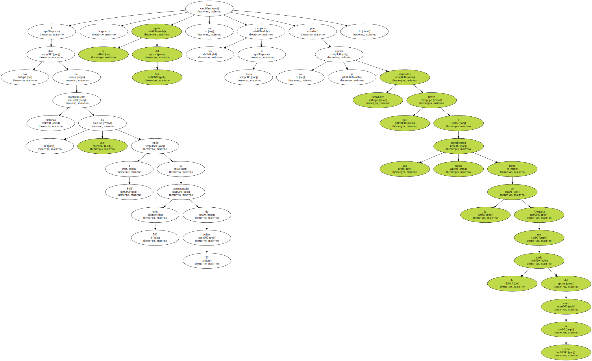Sin embargo , en Seúl se exhala optimismo al considerarse todo un éxito que tras 55 años de rencillas militares y amenazas invasoras en la frontera más militarizada del planeta , los países vecinos hayan consentido tener un simple diálogo de hermanos.
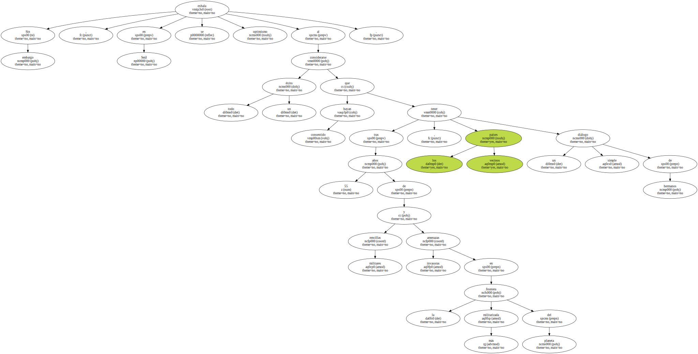Kim Jong Il , el enigmático personaje que en la sombra dirige Corea del Norte , el último reducto estalinista mundial , y Kim Dae Jung , el presidente de la capitalista Corea del Sur , celebrarán del Lunes al miércoles tres reuniones , una de ellas en solitario con la presencia sólo de los taquígrafos.
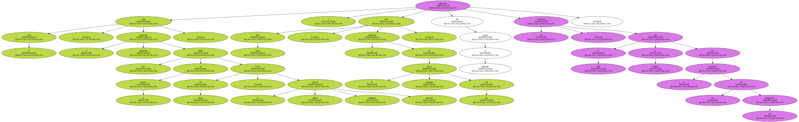Consecuente con el programa que ha hecho de la reunificación coreana el núcleo de su política , el veterano Kim Dae Jung ha calificado la cumbre de un nuevo capítulo en la historia de los dos países , aunque no olvida que hay que ser prudentes.
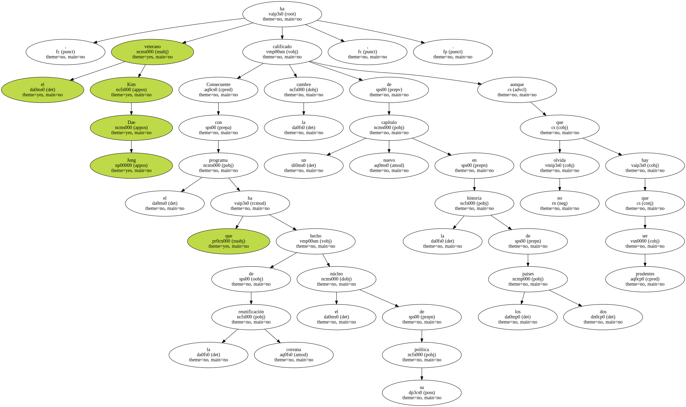" El encuentro en sí pretende cambiar las relaciones del pasado en las que una parte rechazó siempre a la otra como interlocutora . Será un cambio significativo comenzar el diálogo a fondo " , afirmó el estadista.
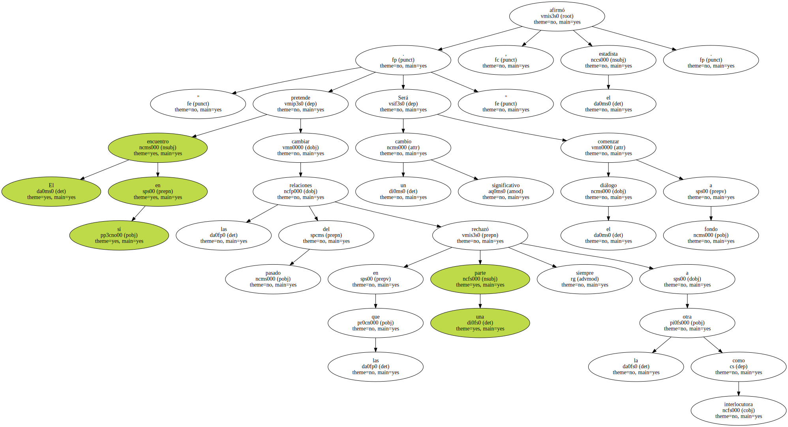El contenido de la agenda de los dos Kim no se publicó por razones de seguridad nacional , aunque fuentes surcoreanas dijeron que sería natural tratar de todo lo que en más de medio siglo no se ha podido hablar , desde las tensiones militares hasta las separaciones familiares forzosas y la ayuda económica.
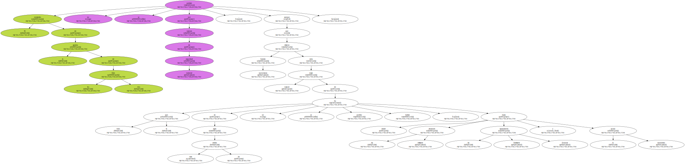Según el viceministro surcoreano de Reunificación , Yang Young Shik , el Gobierno quiere vincular su cooperación económica al asunto de los núcleos familiares rotos por la división de la península en dos países de 1945.
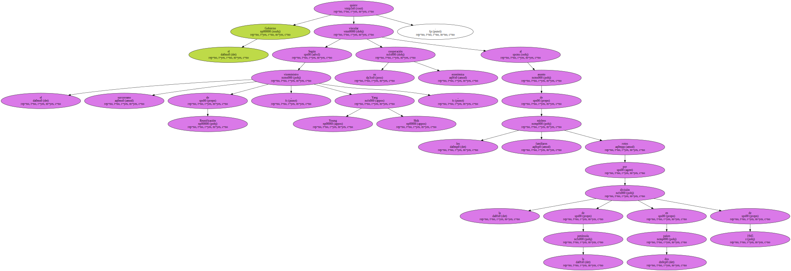El líder de la oposición , Lee Hoi Chang , rival del presidente Kim en las elecciones de 1997 , pidió andar con pies de plomo para no comprometer la seguridad nacional y se opuso a la reiterada exigencia norcoreana de desmantelar el contingente militar estadounidense estacionado en Corea del Sur.
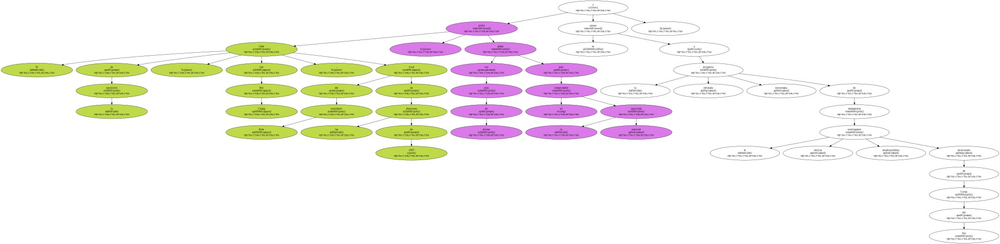" La cooperación para Corea del Norte sólo debe concederse a condición de que su destino no acabe en manos militares " , subrayó Lee , dirigente del Gran Partido Nacional.
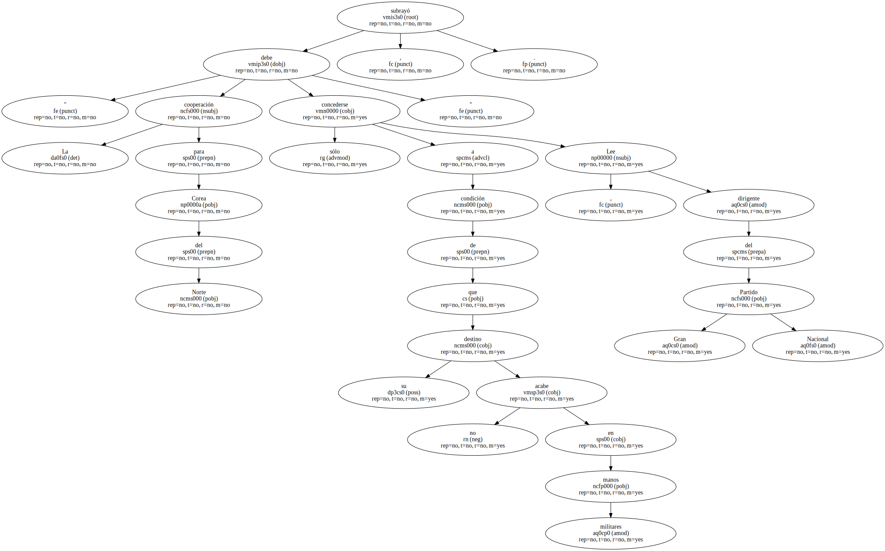En Seúl se ha destacado el viaje sorpresa que hizo la semana pasada el dirigente norcoreano a Pekín , uno de los escasos aliados que tiene ese país , y se ha interpretado como un paso más para que la cumbre intercoreana pueda ser sellada con un éxito.
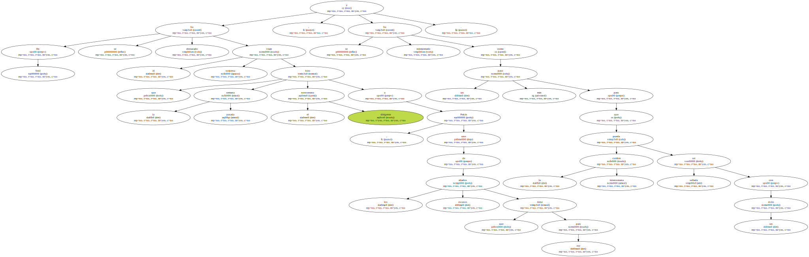Al optimismo surcoreano se ha unido el respaldo expreso dado al acontecimiento por el presidente de EEUU , Bill Clinton , y el viceprimer ministro de China , Qian Qichen , con ocasión del funeral del primer ministro japonés Keizo Obuchi , en el que también el Gobierno de Tokio dio su compromiso.
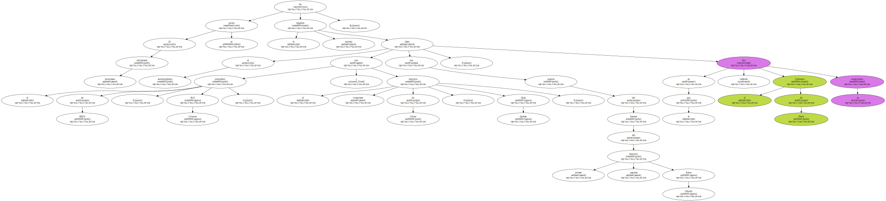Las reuniones de los máximos dirigentes coreanos se producirán en medio de nuevas calamidades meteorológicas comunicadas estos días por Pyongynag , según las cuales el país sufre una nueva sequía que ha arruinado su producción de cereales.
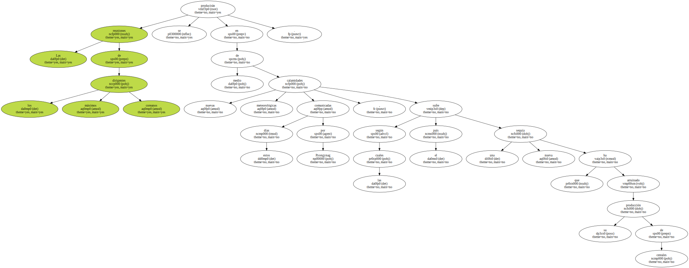La ONU , varias organizaciones humanitarias internacionales y el propio Gobierno de Seúl enviaron alimentos a Pyongyang para aliviar la hambruna que padece la población norcoreana , víctima de la mala gestión económica de ese país y de las inclemencias del clima.
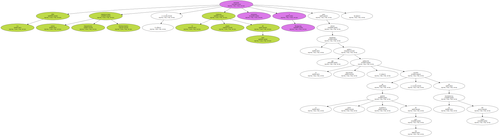